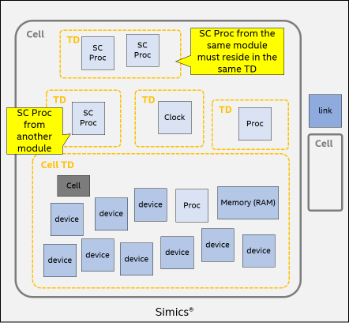

When a Simics adapter is created inside Simics, the elaboration phase is run which creates the SystemC object hierarchy. SystemC simulation phase involves the execution of the SystemC scheduler and is driven by Simics. The Simics simulator has a concept of virtual time that all models refer to. This chapter covers how SystemC models are executed inside the Simics simulator.
The SystemC scheduler is event-driven and events occur at precise points in simulation time. Simulation time in SystemC is an integer multiple of the time resolution and increases monotonically during simulation. Typically, outside of Simics, the SystemC simulation time is advanced by the sc_start function.
The simulation time resolution used for SystemC in Simics is by default one picosecond. In the SystemC Library, sc_start is invoked by the adapter only. It must never be invoked from within a SystemC model. The adapter drives the simulation and keeps track of the current simulation time. To print the current simulation time, use the print-time (ptime) command on the adapter object with the time option:
simics> psel dev
simics> r 1 ps
simics> ptime -pico-seconds
┌─────────┬───────────┐
│Processor│Picoseconds│
├─────────┼───────────┤
│dev │ 1│
└─────────┴───────────┘
It returns the time in seconds as a floating-point value. When the dev object is selected as the command line frontend, the simulation time can be advanced using the run (r) command.
The description of these commands can be found from Simics Reference manual or help command output from Simics CLI.
The pending SystemC events currently registered with the kernel can be listed using the print-event-queue (peq) command:
simics> peq -i
┌──────────┬──────────┬──────────────┐
│ Cycle │ Object │ Description │
├──────────┼──────────┼──────────────┤
│4999999999│dev.engine│Internal: stop│
└──────────┴──────────┴──────────────┘
┌─────────────┬──────┬───────────────────────────────────────────────────┐
│SystemC (ps) │Object│ Description │
├─────────────┼──────┼───────────────────────────────────────────────────┤
│1234000000000│dev │test_sc_devices.dummy_1_event │
│1234000000000│dev │test_sc_devices.dummy_3_event │
│5678000000000│dev │test_sc_devices.event_method (static method) │
│5678000000000│dev │test_sc_devices.trigger_method_event │
│5678000000000│dev │test_sc_devices.event_thread (dynamic thread) │
│5678000000000│dev │test_sc_devices.trigger_thread_event │
│9876000000000│dev │test_sc_devices.dummy_2_event │
│9999999999999│dev │test_sc_devices.event_thread_timed (dynamic thread)│
└─────────────┴──────┴───────────────────────────────────────────────────┘
The events posted by the SystemC adapter are treated as Simics simulator internal events, thus -i is needed.
The time shown in the ptime command output is relative to the current simulation time. Thus, the next event will be triggered after 1234000000000 ps.
The simulation time depends on the context of the SystemC kernel. Each adapter has its own context of the SystemC kernel with its own simulation time and events.
simics> psel dev2
simics> ptime -pico-seconds
┌─────────┬───────────┐
│Processor│Picoseconds│
├─────────┼───────────┤
│dev2 │ 0│
└─────────┴───────────┘
simics> peq -i
┌─────┬───────────┬──────────────┐
│Cycle│ Object │ Description │
├─────┼───────────┼──────────────┤
│ 0│dev2.engine│Internal: stop│
└─────┴───────────┴──────────────┘
The above results show that dev and dev2 have different simulation time and events.
In the Simics simulation framework, the processor concept includes all models that actively drive the simulation forward and manage the simulation time. Each processor is event-driven and supports one or more types of event queues representing: cycles, steps and/or pico-seconds.
All Simics processors in the example configuration can be listed using the list-processors command.
Each adapter (SystemC subsystem) exposes two processors to the rest of the Simics simulation system.
dev and dev2 in the example above) represent the current time of the SystemC kernel embedded in each adapter. This time might be ahead of the rest of the Simics simulation configuration. dev.engine and dev2.engine) are used by the Simics simulation core to drive time forward. simics> list-processors -all
┌───────────┬─┬─────────────────────────┬────────┬─────────┐
│ CPU Name │ │ CPU Class │ Freq │Scheduled│
├───────────┼─┼─────────────────────────┼────────┼─────────┤
│clock │ │clock │1.00 THz│yes │
│dev │ │test_sc_devices │1.00 THz│no │
│dev.engine │ │co-execute │1.00 THz│yes │
│dev2 │*│sample_tlm2_simple_device│1.00 THz│no │
│dev2.engine│ │co-execute │1.00 THz│yes │
└───────────┴─┴─────────────────────────┴────────┴─────────┘
* = selected CPU
Processor dev and dev2 support two kinds of event queues: the cycle-based and pico-seconds-based. The frequency is hardcoded as 1000000 MHz (or equivalently, 1 THz). Thus, 1 cycle equals 1 ps. All SystemC events are posted on the SystemC clock using the ps event queue (see how to display SystemC events using peq above). Since the processor on dev/dev2 runs on SystemC simulation time, it is referred as the SystemC clock in this document.
The previous example of advancing SystemC simulation time can be achieved using cycle as well:
simics> r 1 cycles
simics> # using 'echo' below to illustrate that command return is a float value
simics> echo (ptime -t)
1e-12
Simics events can be posted on the SystemC clock using either the cycle-based or ps-based event queue. Below is an example showing how to post Simics events using the cycle-based event queue:
simics> bp.cycle.break 10
Breakpoint 1: dev2 will break at cycle 11
simics> peq -i
┌─────┬───────────┬───────────────────────────────┐
│Cycle│ Object │ Description │
├─────┼───────────┼───────────────────────────────┤
│ 10│bp.cycle │Break event on dev2 at cycle 11│
│ 999│dev2.engine│Internal: stop │
└─────┴───────────┴───────────────────────────────┘
As shown in the above example, besides the user breakpoint set at cycle 10, the dev.engine processor is also posting events on the SystemC clock (as represented by the dev processor). The dev.engine is another Simics processor like the SystemC clock. It supports both a cycle-based event queue and a ps event queue. The only difference is how they are scheduled.
Figure 1 shows how Simics schedules the target processors in a single thread in default mode. Another mode (the free running mode) is described in section 6.4.3. All blue rectangles are Simics target processors which implement the execute interface. The thread calling the execute interface is a simulation thread managed by the Simics scheduler. clock, dev.engine and dev2.engine are three target processors scheduled directly by the Simics scheduler in a round-robin fashion. With temporal decoupling, each target processor runs multiple simulation steps or cycles (its time quantum) before handing over to the next processor.
The SystemC clock (dev and dev2) is not directly scheduled by the Simics scheduler. Instead it is indirectly scheduled via the adapter’s engine object (dev.engine) which is referred to as the Simics clock. This scheduler decoupling enables the SystemC clock to be driven both by the Simics clock as well as by the adapter. As described in section 6.1, the SystemC clock drives one SystemC kernel context.
In most cases, these two clocks are synced. But the SystemC clock could run ahead of the Simics clock if needed. For example when a synchronous Simics interface calls into the SystemC device, invoking the b_transport function which in turn invokes the wait function. In this case, SystemC time must run forward in order for the b_transport to return so that the Simics interface call can return. See Figure 2.

Besides the processors, from the object hierarchy, there are some other objects that handle time: vtime, vtime.cycles and vtime.ps. They provide the functionality used by both clocks. vtime is used to dispatch pending events and drive the cycle queues. vtime.cycles and vtime.ps contains the cycle-based event queue and the ps event queue respectively. These objects are considered internal and user should not interact with them.
simics> list-objects -show-port-objects substr = vtime -tree
┐
├ clock ┐
│ └ vtime ┐
│ ├ cycles
│ └ ps
├ dev ┐
│ ├ engine ┐
│ │ └ vtime ┐
│ │ ├ cycles
│ │ └ ps
│ └ vtime ┐
│ ├ cycles
│ └ ps
└ dev2 ┐
├ engine ┐
│ └ vtime ┐
│ ├ cycles
│ └ ps
└ vtime ┐
├ cycles
└ ps
The SystemC Library has been optimized to reduce the overhead when running SystemC models inside Simics. Normally, there is no need to do performance tuning. This section is targeting some advanced usage.
In SystemC, using the TLM-2.0 Direct Memory Interface (DMI) offers potentially significant increases in simulation speed for simple memory accesses, since it bypasses the normal b_transport calls. An initiator can check the DMI allowed attribute of a TLM-2.0 transaction passed through the transport interface to see if the target supports it. Since an interconnect component is permitted to modify the address attribute and the extension pointers, the original transaction needs to be deep-copied for potential DMI purposes later on. This deep copy cost some performance. For a SystemC device that does not support DMI, the DMI check can be disabled to avoid this overhead.
For example, following command disables DMI check on the initiator implemented in the gasket:
simics> @conf.dev2.gasket_simple_device_target_socket.iface.sc_initiator_gasket.set_dmi(False)
None
The SystemC simulation can be scaled. When the SystemC simulation runs very slowly, for example, when too many SystemC events are posted, the overall Simics simulation performance is affected. By scaling down the SystemC simulation, it allows the other processors to run faster. This can be achieved by setting the frequency attribute of dev.engine.vtime.
In the future, the frequency attribute can be changed directly from dev.engine.
simics> ptime -all
┌───────────┬─────┬──────┬────────┐
│ Processor │Steps│Cycles│Time (s)│
├───────────┼─────┼──────┼────────┤
│clock │n/a │ 0│ 0.000│
│dev │n/a │ 1001│ 0.000│
│dev2 │n/a │ 1│ 0.000│
│dev2.engine│n/a │ 1│ 0.000│
│dev.engine │n/a │ 1001│ 0.000│
└───────────┴─────┴──────┴────────┘
simics> dev.engine.vtime->frequency = 1e11
simics> r 1000 cycles
simics> ptime -all
┌───────────┬─────┬──────┬────────┐
│ Processor │Steps│Cycles│Time (s)│
├───────────┼─────┼──────┼────────┤
│clock │n/a │ 1000│ 0.000│
│dev │n/a │ 1101│ 0.000│
│dev2 │n/a │ 1001│ 0.000│
│dev2.engine│n/a │ 1001│ 0.000│
│dev.engine │n/a │ 1101│ 0.000│
└───────────┴─────┴──────┴────────┘
Here the frequency does not relate to how one cycle matches to ps but determines how many cycles the processor advances in one delta_tick. By dividing it with a factor of 10, dev and dev.engine run only 1101 – 1001 = 100 cycles compared with dev2 and dev2.engine who runs 1001 – 1 = 1000 cycles. This way, the rest of the simulation gets more wall clock time to run.
SystemC Library supports the general Simics performance scaling feature. The feature is described in chapter "Scaling Simics" of Simics User's Guide. Here only the SystemC specific parts are covered.
Simics Accelerator has two different mechanisms that can operate alone or work together to improve performance. The first is Simics® Multimachine Accelerator which is based upon the cell concept. The other mechanism is Multicore Accelerator which can parallelize simulation even within cells.
Every Simics simulation is split into a set of cells and every processor belongs to a cell. By default, all cells run in parallel with each other. SystemC related processors from different Simics modules can reside in different cells and utilize the power of running in parallel. But SystemC related processors from the same Simics module cannot and by default end up in the same cell. This limitation comes from the Accellera SystemC kernel which is not thread safe (it contains global static variables/pointers). There is an automatic check for this requirement whenever the current SystemC related cell configuration changes.
simics> dev->cell
"default_cell0"
simics> dev.engine->cell
"default_cell0"
simics> @cell1=SIM_create_object('cell', 'cell1')
simics> dev->cell = cell1
[dev error] dev is not placed in the same cell with [dev.engine, ]. The simulation may run into errors or even segfault in multi-threading mode.
By default, all SystemC related processors from one Simics module reside in the same cell (default_cell0 in the above example). If processor dev is moved to a different cell (cell1), with dev.engine still in default_cell0, an error message is printed as show in the above example. Do not ignore this error, as the simulation will likely run into hard-to-debug type of errors or even segfaults in multi-threading mode.
The configuration is correct again when dev.engine is moved to cell1 as well. Since dev and dev2 belong to different Simics modules, they can reside in different cells.
simics> dev.engine->cell = cell1
simics> set-threading-mode serialized
simics> set-threading-mode
┌─────────────┬──────────┬───┬────────────┬─────────────┬───────────┐
│ cell │ mode │#td│time-quantum│max-time-span│min-latency│
├─────────────┼──────────┼───┼────────────┼─────────────┼───────────┤
│default_cell0│serialized│ 1│ 1.0 ns│ (1.0 ns)│ 10.0 ms│
│cell1 │serialized│ 1│ (1.0 ns)│ (1.0 ns)│ 10.0 ms│
└─────────────┴──────────┴───┴────────────┴─────────────┴───────────┘
simics> list-thread-domains
┌─────────────┬──────┬───────────┐
│ Cell │Domain│ Objects │
├─────────────┼──────┼───────────┤
│default_cell0│ #0│clock │
│ │ │dev2 │
│ │ │dev2.engine│
└─────────────┴──────┴───────────┘
┌─────┬──────┬──────────┐
│Cell │Domain│ Objects │
├─────┼──────┼──────────┤
│cell1│ #0│dev │
│ │ │dev.engine│
└─────┴──────┴──────────┘
With Subsystem threading, multiple host threads can be used to simulate multiple processors within each cell concurrently provided that the processors do not share memory. SystemC Library supports this execution threading model. Just like the cell partition limitation, all SystemC processors from the same module must reside in the same thread domain. This is guaranteed by the adapter class in SystemC Library so the user can never break this invariant. When Multicore Accelerator is enabled, by default, all SystemC instances from same module are grouped within the same thread domain. SystemC instances from different modules can reside in different thread domains and will then benefit from parallel multi-threading.

Current thread domain partitioning can be checked with list-thread-domains command.
simics> @SIM_create_object('sample_tlm2_simple_device', 'dev3')
simics> set-threading-mode subsystem
simics> set-threading-mode
┌─────────────┬───────────────────┬───┬────────────┬─────────────┬───────────┐
│ cell │ mode │#td│time-quantum│max-time-span│min-latency│
├─────────────┼───────────────────┼───┼────────────┼─────────────┼───────────┤
│default_cell0│ subsystem │ 2│ 1.0 ns│ 1.0 ns│ 10.0 ms│
│cell1 │multicore/subsystem│ 1│ (1.0 ns)│ (1.0 ns)│ 10.0 ms│
└─────────────┴───────────────────┴───┴────────────┴─────────────┴───────────┘
simics> list-thread-domains
┌─────────────┬──────┬───────────┐
│ Cell │Domain│ Objects │
├─────────────┼──────┼───────────┤
│default_cell0│ #0│clock │
├─────────────┼──────┼───────────┤
│ │ #1│dev2 │
│ │ │dev2.engine│
│ │ │dev3 │
│ │ │dev3.engine│
└─────────────┴──────┴───────────┘
┌─────┬──────┬──────────┐
│Cell │Domain│ Objects │
├─────┼──────┼──────────┤
│cell1│ #0│dev │
│ │ │dev.engine│
└─────┴──────┴──────────┘
In the example above, there are three Simics processors scheduled by Simics inside default_cell0. The clock resides in the cell TD #0. Since dev2 and dev3 use the same Simics module, dev2.engine and dev3.engine reside in TD #1. This allows objects in one cell to run in parallel using multiple threads.
The SystemC simulation can also run in free running mode. In this mode, SystemC time synchronization is decoupled from the rest of Simics. The SystemC simulation is no longer scheduled in round robin with the other processors and clocks as show in Figure 1. This can be achieved by setting the run_continuously attribute of dev.engine.
Free running is only supported when the threading mode is subsystem or multicore.
simics> ptime -all
┌──────────┬─────┬──────┬────────┐
│Processor │Steps│Cycles│Time (s)│
├──────────┼─────┼──────┼────────┤
│clock │n/a │ 0│ 0.000│
│dev │n/a │ 0│ 0.000│
│dev.engine│n/a │ 0│ 0.000│
└──────────┴─────┴──────┴────────┘
simics> psel dev
simics> r 10001 cycles
simics> ptime -all
┌──────────┬─────┬──────┬────────┐
│Processor │Steps│Cycles│Time (s)│
├──────────┼─────┼──────┼────────┤
│clock │n/a │ 10000│ 0.000│
│dev │n/a │ 10001│ 0.000│
│dev.engine│n/a │ 10001│ 0.000│
└──────────┴─────┴──────┴────────┘
simics> set-threading-mode subsystem
simics> dev.engine->run_continuously = TRUE
simics> r 10000 cycles
simics> ptime -all
In above example, the SystemC model inside the dev contains a heavy workload that will slow down the simulation. When it runs in the default mode, the clock and dev are coupled and advanced with same cycles. When switched to the free running mode, clock is decouple from dev and can move forward in a much faster pace. In the above example, when dev and dev.engine move 10000 cycles forward, clock has moved much further. The exact number of cycles for clock is not deterministic, following is one example of such a run.
┌──────────┬─────┬─────────────┬────────┐
│Processor │Steps│ Cycles │Time (s)│
├──────────┼─────┼─────────────┼────────┤
│clock │n/a │4294999999998│ 4.295│
│dev │n/a │ 20001│ 0.000│
│dev.engine│n/a │ 20001│ 0.000│
└──────────┴─────┴─────────────┴────────┘